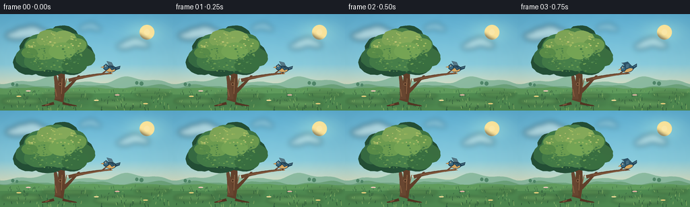
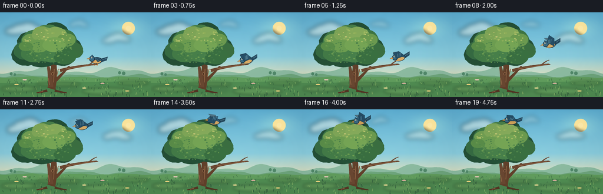
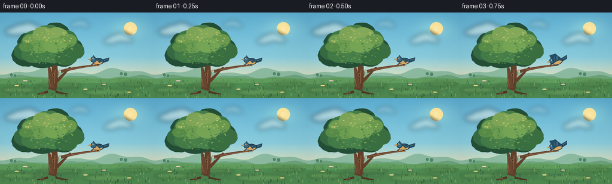
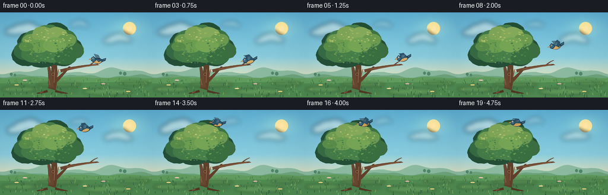
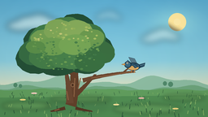
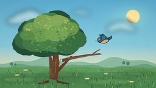
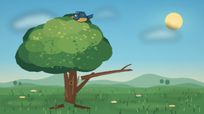
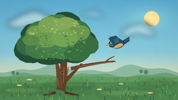
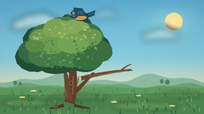

CODING AGENTS AS PIXEL WORLD MODELS
traex/DeepSeek-V4.1-Flash · dynamic_spatial_relationship_0049
点击播放 · 原生 RGB 像素
逐轮保存的候选
回放视频、检查图与代码变化。
每份候选均可单独播放。实际图片检查记录在下方工具轨迹中。
候选 01播放与检查图
点击播放 · 原生 RGB 像素


展开代码变化
--- 上一保存版本
+++ 本次保存版本
@@ -0,0 +1,655 @@
+from __future__ import annotations
+
+import math
+from pathlib import Path
+
+import numpy as np
+from PIL import Image, ImageDraw, ImageFilter
+
+from artifact_io import save
+
+
+WIDTH = 256
+HEIGHT = 144
+FRAMES = 20
+FPS = 4.0
+SS = 4
+
+ROOT = Path(__file__).resolve().parent
+
+
+def rgba(hex_color: str, alpha: int = 255) -> tuple[int, int, int, int]:
+ value = hex_color.lstrip("#")
+ return tuple(int(value[i : i + 2], 16) for i in (0, 2, 4)) + (alpha,)
+
+
+def lerp(a: float, b: float, t: float) -> float:
+ return a + (b - a) * t
+
+
+def lerp_color(
+ a: tuple[int, int, int, int], b: tuple[int, int, int, int], t: float
+) -> tuple[int, int, int, int]:
+ return tuple(round(lerp(a[i], b[i], t)) for i in range(4))
+
+
+def smoothstep(t: float) -> float:
+ t = max(0.0, min(1.0, t))
+ return t * t * (3.0 - 2.0 * t)
+
+
+def ease_in_out(t: float) -> float:
+ t = max(0.0, min(1.0, t))
+ return 0.5 - 0.5 * math.cos(math.pi * t)
+
+
+def cubic_bezier(
+ p0: tuple[float, float],
+ p1: tuple[float, float],
+ p2: tuple[float, float],
+ p3: tuple[float, float],
+ t: float,
+) -> tuple[float, float]:
+ u = 1.0 - t
+ x = u**3 * p0[0] + 3 * u * u * t * p1[0] + 3 * u * t * t * p2[0] + t**3 * p3[0]
+ y = u**3 * p0[1] + 3 * u * u * t * p1[1] + 3 * u * t * t * p2[1] + t**3 * p3[1]
+ return x, y
+
+
+def bezier_tangent(
+ p0: tuple[float, float],
+ p1: tuple[float, float],
+ p2: tuple[float, float],
+ p3: tuple[float, float],
+ t: float,
+) -> tuple[float, float]:
+ u = 1.0 - t
+ dx = (
+ 3 * u * u * (p1[0] - p0[0])
+ + 6 * u * t * (p2[0] - p1[0])
+ + 3 * t * t * (p3[0] - p2[0])
+ )
+ dy = (
+ 3 * u * u * (p1[1] - p0[1])
+ + 6 * u * t * (p2[1] - p1[1])
+ + 3 * t * t * (p3[1] - p2[1])
+ )
+ return dx, dy
+
+
+def sxy(value: float) -> float:
+ return value * SS
+
+
+def spoint(point: tuple[float, float]) -> tuple[float, float]:
+ return point[0] * SS, point[1] * SS
+
+
+def scaled_points(points: list[tuple[float, float]]) -> list[tuple[float, float]]:
+ return [(x * SS, y * SS) for x, y in points]
+
+
+def make_sky() -> Image.Image:
+ """Warm morning sky with a softly textured horizon."""
+ h = HEIGHT * SS
+ w = WIDTH * SS
+ y = np.linspace(0.0, 1.0, h, dtype=np.float32)[:, None]
+ x = np.linspace(0.0, 1.0, w, dtype=np.float32)[None, :]
+
+ top = np.array([93, 177, 219], dtype=np.float32)
+ middle = np.array([157, 217, 229], dtype=np.float32)
+ horizon = np.array([246, 226, 180], dtype=np.float32)
+
+ t = np.clip(y / 0.78, 0.0, 1.0)
+ first = top[None, None, :] * (1 - t[..., None]) + middle[None, None, :] * t[..., None]
+ low_mix = np.clip((y - 0.52) / 0.36, 0.0, 1.0)
+ rgb = first * (1 - low_mix[..., None]) + horizon[None, None, :] * low_mix[..., None]
+
+ rng = np.random.default_rng(41)
+ noise = rng.normal(0.0, 1.0, (h // 8, w // 8)).astype(np.float32)
+ noise = np.asarray(
+ Image.fromarray(((noise * 0.5 + 0.5) * 255).clip(0, 255).astype(np.uint8))
+ .resize((w, h), Image.Resampling.BICUBIC)
+ .filter(ImageFilter.GaussianBlur(3 * SS)),
+ dtype=np.float32,
+ )
+ rgb = rgb + (noise[..., None] - 127.5) * 0.018
+
+ sun_glow = np.exp(-(((x - 0.84) ** 2 + (y - 0.18) ** 2) / 0.012))
+ rgb = rgb + sun_glow[..., None] * np.array([28.0, 23.0, 6.0])
+ return Image.fromarray(np.clip(rgb, 0, 255).astype(np.uint8), "RGB").convert("RGBA")
+
+
+def draw_cloud(
+ image: Image.Image,
+ center: tuple[float, float],
+ scale: float,
+ opacity: int,
+ phase: float,
+) -> None:
+ """Paint a soft, lightly wind-shaped cloud."""
+ layer = Image.new("RGBA", image.size, (0, 0, 0, 0))
+ draw = ImageDraw.Draw(layer)
+ cx, cy = spoint(center)
+ s = scale * SS
+ puffs = [
+ (-38, 3, 31, 13),
+ (-19, -5, 29, 17),
+ (5, -8, 31, 20),
+ (28, 0, 27, 15),
+ (43, 5, 20, 10),
+ (-51, 8, 20, 8),
+ ]
+ for index, (dx, dy, rx, ry) in enumerate(puffs):
+ wobble = math.sin(phase + index * 0.9) * 1.5 * SS
+ box = (
+ cx + (dx - rx) * s,
+ cy + (dy - ry) * s + wobble,
+ cx + (dx + rx) * s,
+ cy + (dy + ry) * s + wobble,
+ )
+ draw.ellipse(box, fill=rgba("#f8fbf4", opacity))
+ layer = layer.filter(ImageFilter.GaussianBlur(4.0 * SS))
+ image.alpha_composite(layer)
+
+
+def draw_distant_hills(image: Image.Image) -> None:
+ draw = ImageDraw.Draw(image, "RGBA")
+ w, h = image.size
+
+ back = rgba("#8abba5", 175)
+ points = [(0, 103 * SS)]
+ for px in range(0, WIDTH + 5, 5):
+ py = 99 + 4.2 * math.sin(px * 0.052 + 0.8) + 2.4 * math.sin(px * 0.119 + 1.6)
+ points.append((px * SS, py * SS))
+ points.extend([(w, 112 * SS), (0, 112 * SS)])
+ draw.polygon(points, fill=back)
+
+ mid = rgba("#6ca580", 210)
+ points = [(0, 110 * SS)]
+ for px in range(0, WIDTH + 5, 4):
+ py = 108 + 2.3 * math.sin(px * 0.066 + 2.1) + 1.3 * math.sin(px * 0.151)
+ points.append((px * SS, py * SS))
+ points.extend([(w, 122 * SS), (0, 122 * SS)])
+ draw.polygon(points, fill=mid)
+
+ # Tiny distant tree line gives depth without competing with the main tree.
+ for x, y, radius in [(19, 105, 2.4), (25, 106, 2.0), (203, 103, 2.4), (210, 104, 2.8)]:
+ draw.ellipse(
+ ((x - radius) * SS, (y - radius * 1.2) * SS, (x + radius) * SS, (y + radius) * SS),
+ fill=rgba("#4f896d", 145),
+ )
+
+
+def draw_meadow(image: Image.Image, phase: float) -> None:
+ draw = ImageDraw.Draw(image, "RGBA")
+ w, h = image.size
+
+ ground_points = [(0, 111 * SS)]
+ for px in range(0, WIDTH + 4, 4):
+ py = 110.3 + 0.85 * math.sin(px * 0.08 + 0.6) + 0.42 * math.sin(px * 0.21)
+ ground_points.append((px * SS, py * SS))
+ ground_points.extend([(w, h), (0, h)])
+ draw.polygon(ground_points, fill=rgba("#5f9d60"))
+
+ # Layered foreground bands and mown-light patches.
+ draw.polygon(
+ [(0, 120 * SS), (w, 117 * SS), (w, h), (0, h)],
+ fill=rgba("#4f8d55"),
+ )
+ patch_layer = Image.new("RGBA", image.size, (0, 0, 0, 0))
+ patch = ImageDraw.Draw(patch_layer, "RGBA")
+ for x, y, rx, ry, color in [
+ (32, 130, 30, 5, "#75aa63"),
+ (99, 122, 38, 4, "#6ea45e"),
+ (181, 134, 42, 6, "#76ad67"),
+ (226, 120, 26, 4, "#659c58"),
+ ]:
+ patch.ellipse(
+ ((x - rx) * SS, (y - ry) * SS, (x + rx) * SS, (y + ry) * SS),
+ fill=rgba(color, 95),
+ )
+ patch_layer = patch_layer.filter(ImageFilter.GaussianBlur(2.5 * SS))
+ image.alpha_composite(patch_layer)
+
+ rng = np.random.default_rng(1907)
+ grass = ImageDraw.Draw(image, "RGBA")
+ for _ in range(150):
+ x = float(rng.uniform(2, WIDTH - 2))
+ y = float(rng.uniform(114, HEIGHT + 2))
+ depth = (y - 110) / 34
+ length = rng.uniform(2.0, 5.0) * (0.65 + depth * 0.7)
+ lean = math.sin(phase * 1.4 + x * 0.17) * 0.9 + rng.uniform(-1.0, 1.0)
+ color = "#315f40" if rng.random() < 0.58 else "#83b36a"
+ grass.line(
+ [(x * SS, y * SS), ((x + lean) * SS, (y - length) * SS)],
+ fill=rgba(color, int(105 + 70 * depth)),
+ width=max(1, round((0.45 + depth * 0.55) * SS)),
+ )
+
+ for x, y, petal in [
+ (28, 126, "#f4df8a"),
+ (42, 118, "#f4d2ce"),
+ (143, 132, "#f8e6a4"),
+ (174, 124, "#e8b8b4"),
+ (216, 137, "#f5dc8a"),
+ ]:
+ stem_color = rgba("#3f784d", 210)
+ grass.line(
+ [(x * SS, y * SS), ((x + 0.3) * SS, (y - 3.2) * SS)],
+ fill=stem_color,
+ width=SS,
+ )
+ r = 0.9 * SS
+ grass.ellipse(
+ ((x - r) * SS, (y - 3.2) * SS - r, (x + r) * SS, (y - 3.2) * SS + r),
+ fill=rgba(petal, 235),
+ )
+ grass.ellipse(
+ ((x - 0.35) * SS, (y - 3.45) * SS, (x + 0.35) * SS, (y - 2.95) * SS),
+ fill=rgba("#d99d45", 240),
+ )
+
+
+def blob_points(
+ cx: float,
+ cy: float,
+ rx: float,
+ ry: float,
+ seed: int,
+ points: int = 30,
+ irregularity: float = 0.09,
+) -> list[tuple[float, float]]:
+ rng = np.random.default_rng(seed)
+ offsets = rng.normal(0.0, 1.0, points)
+ # Smooth the radial offsets so the silhouette feels leafy, not spiky.
+ offsets = np.convolve(np.r_[offsets[-3:], offsets, offsets[:3]], np.ones(5) / 5, "valid")
+ out = []
+ for i in range(points):
+ angle = 2 * math.pi * i / points
+ wobble = 1.0 + irregularity * offsets[i]
+ out.append((cx + math.cos(angle) * rx * wobble, cy + math.sin(angle) * ry * wobble))
+ return out
+
+
+def draw_branch(
+ draw: ImageDraw.ImageDraw,
+ start: tuple[float, float],
+ control: tuple[float, float],
+ end: tuple[float, float],
+ start_width: float,
+ end_width: float,
+ color: str,
+) -> None:
+ samples = []
+ for i in range(25):
+ t = i / 24
+ u = 1 - t
+ x = u * u * start[0] + 2 * u * t * control[0] + t * t * end[0]
+ y = u * u * start[1] + 2 * u * t * control[1] + t * t * end[1]
+ dx = 2 * u * (control[0] - start[0]) + 2 * t * (end[0] - control[0])
+ dy = 2 * u * (control[1] - start[1]) + 2 * t * (end[1] - control[1])
+ length = math.hypot(dx, dy) or 1.0
+ nx, ny = -dy / length, dx / length
+ width = lerp(start_width, end_width, t)
+ samples.append(
+ [
+ ((x + nx * width / 2) * SS, (y + ny * width / 2) * SS),
+ ((x - nx * width / 2) * SS, (y - ny * width / 2) * SS),
+ ]
+ )
+ polygon = [samples[0][0]] + [pair[0] for pair in samples[1:]] + [
+ pair[1] for pair in reversed(samples[:-1])
+ ]
+ draw.polygon(polygon, fill=rgba(color))
+
+
+def draw_tree(image: Image.Image, phase: float) -> None:
+ """A layered deciduous tree with a clear right-hand perch branch."""
+ shadow = Image.new("RGBA", image.size, (0, 0, 0, 0))
+ sd = ImageDraw.Draw(shadow, "RGBA")
+ sd.ellipse(
+ (56 * SS, 123 * SS, 135 * SS, 137 * SS),
+ fill=rgba("#305c42", 52),
+ )
+ shadow = shadow.filter(ImageFilter.GaussianBlur(4 * SS))
+ image.alpha_composite(shadow)
+
+ draw = ImageDraw.Draw(image, "RGBA")
+ sway = math.sin(phase * 1.25) * 0.75
+
+ # Back branches show through gaps in the foliage.
+ for start, control, end, width in [
+ ((89, 91), (65, 77), (51, 60), 4.5),
+ ((91, 86), (114, 72), (130, 58), 4.2),
+ ((88, 79), (82, 59), (78, 44), 4.0),
+ ]:
+ draw_branch(draw, start, control, end, width, 1.2, "#5b3d2c")
+
+ # Main trunk and roots.
+ draw_branch(draw, (87, 130), (95, 103), (89 + sway * 0.25, 66), 13.5, 7.0, "#60402c")
+ draw_branch(draw, (86, 127), (85, 105), (80, 82), 9.0, 3.0, "#684733")
+ draw_branch(draw, (92, 118), (107, 104), (118, 91), 6.0, 2.1, "#60402c")
+ draw_branch(draw, (80, 133), (69, 136), (62, 137), 4.2, 1.4, "#523625")
+ draw_branch(draw, (93, 133), (105, 136), (114, 137), 3.8, 1.2, "#523625")
+
+ # Bark highlights and a small knot.
+ for x0, y0, x1, y1 in [
+ (84, 123, 82, 112),
+ (91, 119, 92, 96),
+ (96, 109, 99, 96),
+ (73, 134, 67, 136),
+ ]:
+ draw.line(
+ [(x0 * SS, y0 * SS), (x1 * SS, y1 * SS)],
+ fill=rgba("#8a6245", 155),
+ width=max(1, round(1.15 * SS)),
+ )
+ draw.ellipse(
+ (87 * SS, 102 * SS, 91.5 * SS, 107 * SS),
+ fill=rgba("#4b3021", 215),
+ outline=rgba("#8c674b", 120),
+ width=SS,
+ )
+
+ # The branch extends clearly to the bird's initial perch on the right.
+ draw_branch(draw, (102, 99), (131, 91), (167, 88), 5.2, 2.2, "#684632")
+ draw_branch(draw, (151, 90), (158, 83), (165, 81), 2.1, 0.8, "#684632")
+ draw.line(
+ [(112 * SS, 96 * SS), (160 * SS, 88.6 * SS)],
+ fill=rgba("#a47752", 125),
+ width=max(1, round(0.75 * SS)),
+ )
+
+ # Dark under-canopy gives the leafy mass depth.
+ under = [
+ (45, 72, 25, 19, 11),
+ (66, 54, 29, 25, 12),
+ (92, 46, 29, 26, 13),
+ (115, 62, 25, 20, 14),
+ (72, 75, 28, 18, 15),
+ (101, 73, 26, 18, 16),
+ (50, 52, 20, 18, 17),
+ ]
+ for cx, cy, rx, ry, seed in under:
+ pts = blob_points(cx + sway, cy, rx, ry, seed, irregularity=0.11)
+ draw.polygon(scaled_points(pts), fill=rgba("#234f38", 245))
+
+ mid = [
+ (44, 64, 21, 16, 31, "#356b45"),
+ (61, 49, 25, 20, 32, "#3e7b4b"),
+ (82, 42, 26, 22, 33, "#477f4c"),
+ (105, 50, 25, 21, 34, "#3c7546"),
+ (121, 64, 20, 15, 35, "#396d42"),
+ (58, 69, 23, 16, 36, "#427b49"),
+ (88, 68, 27, 18, 37, "#467f4c"),
+ (110, 74, 19, 14, 38, "#386e42"),
+ ]
+ for cx, cy, rx, ry, seed, color in mid:
+ pts = blob_points(cx + sway, cy, rx, ry, seed, irregularity=0.095)
+ draw.polygon(scaled_points(pts), fill=rgba(color))
+
+ # Sunlit crown and individual leaf dabs.
+ highlights = [
+ (55, 47, 17, 11, 51, "#6f9e55"),
+ (73, 37, 19, 13, 52, "#7da65a"),
+ (94, 38, 19, 13, 53, "#83aa5d"),
+ (112, 47, 16, 11, 54, "#699951"),
+ (66, 57, 18, 11, 55, "#6b9d53"),
+ (91, 55, 20, 12, 56, "#73a457"),
+ (44, 58, 12, 8, 57, "#588d4b"),
+ ]
+ for cx, cy, rx, ry, seed, color in highlights:
+ pts = blob_points(cx + sway * 1.2, cy, rx, ry, seed, irregularity=0.08)
+ draw.polygon(scaled_points(pts), fill=rgba(color, 235))
+
+ rng = np.random.default_rng(711)
+ for _ in range(145):
+ angle = rng.uniform(0, math.tau)
+ radius = math.sqrt(rng.uniform(0.08, 1.0))
+ cx = 82 + math.cos(angle) * 42 * radius + sway * (1.3 - radius * 0.4)
+ cy = 57 + math.sin(angle) * 31 * radius
+ if ((cx - 82) / 47) ** 2 + ((cy - 57) / 35) ** 2 > 1:
+ continue
+ size = rng.uniform(0.6, 1.45)
+ if cy < 50:
+ color = rng.choice(["#a4bd67", "#8fb15d", "#c1c77a"], p=[0.48, 0.39, 0.13])
+ else:
+ color = rng.choice(["#4f874d", "#6b9d54", "#3e7548"], p=[0.45, 0.36, 0.19])
+ draw.ellipse(
+ (
+ (cx - size * 1.25) * SS,
+ (cy - size * 0.75) * SS,
+ (cx + size * 1.25) * SS,
+ (cy + size * 0.75) * SS,
+ ),
+ fill=rgba(str(color), int(rng.uniform(110, 210))),
+ )
+
+
+def draw_sun(image: Image.Image) -> None:
+ draw = ImageDraw.Draw(image, "RGBA")
+ cx, cy = 218, 27
+ for radius, alpha in [(11, 26), (8.5, 34), (6.2, 45)]:
+ draw.ellipse(
+ ((cx - radius) * SS, (cy - radius) * SS, (cx + radius) * SS, (cy + radius) * SS),
+ fill=rgba("#ffeaa4", alpha),
+ )
+ draw.ellipse(
+ ((cx - 4.2) * SS, (cy - 4.2) * SS, (cx + 4.2) * SS, (cy + 4.2) * SS),
+ fill=rgba("#ffeeb1", 205),
+ )
+
+
+def draw_bird(
+ image: Image.Image,
+ center: tuple[float, float],
+ angle_deg: float,
+ wing_angle: float,
+ perched: bool,
+ wing_span: float = 1.0,
+) -> None:
+ """Draw a side-view songbird facing left, rendered in local high-res space."""
+ layer = Image.new("RGBA", image.size, (0, 0, 0, 0))
+ d = ImageDraw.Draw(layer, "RGBA")
+ cx, cy = spoint(center)
+ scale = SS * 1.04
+
+ def p(x: float, y: float) -> tuple[float, float]:
+ return cx + x * scale, cy + y * scale
+
+ # Tail behind the body.
+ d.polygon(
+ [p(5.5, -2.2), p(13.0, -4.2), p(12.2, -0.2), p(6.2, 2.0)],
+ fill=rgba("#244a63"),
+ outline=rgba("#172d3b"),
+ )
+ d.line(
+ [p(7.0, -0.8), p(11.8, -2.4)],
+ fill=rgba("#5f8190", 190),
+ width=max(1, round(0.7 * SS)),
+ )
+
+ # Far wing, slightly lighter and offset.
+ far_wing = [
+ p(-1.6, -1.4),
+ p(-6.4 + math.sin(wing_angle) * 1.1, -4.1 - wing_span * 6.8),
+ p(0.7, -4.0 - wing_span * 5.4),
+ p(4.9, -0.7),
+ ]
+ d.polygon(far_wing, fill=rgba("#4f7182", 235), outline=rgba("#1e3847"))
+
+ # Body and head.
+ d.ellipse(
+ (cx - 8.2 * scale, cy - 4.5 * scale, cx + 7.2 * scale, cy + 4.8 * scale),
+ fill=rgba("#315c77"),
+ outline=rgba("#172f40"),
+ width=max(1, round(1.0 * SS)),
+ )
+ d.ellipse(
+ (cx - 7.2 * scale, cy - 0.7 * scale, cx + 5.4 * scale, cy + 4.1 * scale),
+ fill=rgba("#d9a65e", 235),
+ )
+ d.ellipse(
+ (cx - 11.3 * scale, cy - 6.2 * scale, cx - 3.3 * scale, cy + 1.8 * scale),
+ fill=rgba("#386985"),
+ outline=rgba("#172f40"),
+ width=max(1, round(0.9 * SS)),
+ )
+ # A small crest.
+ d.polygon(
+ [p(-9.0, -5.3), p(-7.5, -7.6), p(-5.3, -5.6)],
+ fill=rgba("#315c77"),
+ outline=rgba("#172f40"),
+ )
+ # Beak.
+ d.polygon(
+ [p(-10.7, -3.8), p(-15.0, -2.3), p(-10.6, -1.3)],
+ fill=rgba("#eaa447"),
+ outline=rgba("#8a552e"),
+ )
+ d.line(
+ [p(-10.8, -2.5), p(-13.8, -2.35)],
+ fill=rgba("#754728", 170),
+ width=max(1, round(0.45 * SS)),
+ )
+ # Eye with a tiny glint.
+ d.ellipse(
+ (cx - 8.7 * scale, cy - 5.2 * scale, cx - 6.5 * scale, cy - 3.0 * scale),
+ fill=rgba("#f3e8c8"),
+ )
+ d.ellipse(
+ (cx - 8.1 * scale, cy - 4.9 * scale, cx - 6.8 * scale, cy - 3.6 * scale),
+ fill=rgba("#13212b"),
+ )
+ d.ellipse(
+ (cx - 7.9 * scale, cy - 4.8 * scale, cx - 7.3 * scale, cy - 4.2 * scale),
+ fill=rgba("#ffffff", 230),
+ )
+
+ # Near wing: a compact folded wing on the perch, a broad animated wing in flight.
+ if perched:
+ near_wing = [
+ p(-2.3, -1.6),
+ p(1.5, -3.2),
+ p(5.0, 0.2),
+ p(1.0, 2.1),
+ ]
+ d.polygon(near_wing, fill=rgba("#284c63"), outline=rgba("#132a39"))
+ d.line(
+ [p(-0.6, -1.5), p(2.7, 0.3)],
+ fill=rgba("#6f8d97", 160),
+ width=max(1, round(0.55 * SS)),
+ )
+ # Feet grip the branch.
+ for foot_x in (-2.7, 1.0):
+ d.line(
+ [p(foot_x, 3.9), p(foot_x - 0.6, 7.2)],
+ fill=rgba("#c77d37"),
+ width=max(1, round(0.7 * SS)),
+ )
+ d.line(
+ [p(foot_x - 0.6, 7.2), p(foot_x - 2.0, 7.7)],
+ fill=rgba("#c77d37"),
+ width=max(1, round(0.6 * SS)),
+ )
+ else:
+ flap = math.radians(wing_angle)
+ shoulder = (-0.2, -1.8)
+ base = [(-4.8, 1.2), (-3.5, -9.0 * wing_span), (2.6, -8.2 * wing_span), (6.2, 1.1)]
+ near_wing = []
+ for x, y in base:
+ rx = x * math.cos(flap) - y * math.sin(flap)
+ ry = x * math.sin(flap) + y * math.cos(flap)
+ near_wing.append(p(shoulder[0] + rx, shoulder[1] + ry))
+ d.polygon(near_wing, fill=rgba("#2b526b"), outline=rgba("#122a39"))
+ # Feather separations keep the moving wing readable.
+ for offset in (0.0, 2.4, 4.6):
+ d.line(
+ [p(-2.6 + offset * 0.6, -2.0), p(-1.2 + offset * 0.8, -7.0 * wing_span)],
+ fill=rgba("#7692a0", 135),
+ width=max(1, round(0.5 * SS)),
+ )
+
+ # Rotate the bird around its center to follow the flight arc.
+ rotated = layer.rotate(
+ angle_deg,
+ resample=Image.Resampling.BICUBIC,
+ center=(cx, cy),
+ fillcolor=(0, 0, 0, 0),
+ )
+ image.alpha_composite(rotated)
+
+
+def flight_state(frame_index: int) -> tuple[tuple[float, float], float, float, bool, float]:
+ p0 = (165.0, 81.8)
+ p1 = (187.0, 60.0)
+ p2 = (151.0, 22.0)
+ p3 = (103.5, 23.2)
+
+ if frame_index <= 2:
+ bob = math.sin(frame_index * math.pi * 0.65) * 0.28
+ return (p0[0], p0[1] + bob), 0.0, 0.0, True, 1.0
+
+ raw = (frame_index - 3) / 13.0
+ t = ease_in_out(raw)
+ center = cubic_bezier(p0, p1, p2, p3, t)
+ dx, dy = bezier_tangent(p0, p1, p2, p3, t)
+ angle = math.degrees(math.atan2(dy, dx)) + 180.0
+ # Keep the bird mostly level: the pose should read like a small songbird.
+ angle = max(-13.0, min(15.0, angle * 0.34))
+
+ if frame_index >= 17:
+ settle = frame_index - 17
+ center = (p3[0], p3[1] + math.sin(settle * math.pi) * 0.22)
+ angle *= max(0.0, 1.0 - settle * 0.38)
+
+ flap_cycle = (frame_index - 3) * 1.55
+ wing_angle = math.sin(flap_cycle) * 53.0 - 8.0
+ wing_span = 0.92 + 0.08 * math.cos(flap_cycle)
+ perched = False
+ if frame_index >= 18:
+ wing_angle = 4.0
+ wing_span = 0.72
+ return center, angle, wing_angle, perched, wing_span
+
+
+def render_frame(frame_index: int) -> np.ndarray:
+ phase = frame_index / FPS
+ image = make_sky()
+ draw_sun(image)
+
+ # Clouds drift gently right-to-left while remaining distant and quiet.
+ draw_cloud(image, (45 + phase * 1.2, 30 + math.sin(phase * 0.7) * 0.8), 0.52, 118, phase)
+ draw_cloud(image, (199 + phase * 0.7, 45 + math.sin(phase * 0.6 + 1.0) * 0.7), 0.37, 96, phase + 2.0)
+ draw_cloud(image, (135 - phase * 0.45, 20 + math.sin(phase * 0.8 + 0.5) * 0.5), 0.25, 66, phase + 4.0)
+
+ draw_distant_hills(image)
+ draw_meadow(image, phase)
+ draw_tree(image, phase)
+
+ center, angle, wing_angle, perched, wing_span = flight_state(frame_index)
+ draw_bird(image, center, angle, wing_angle, perched, wing_span)
+
+ # Fine vignette and warm filmic grade.
+ arr = np.asarray(image.convert("RGB").resize((WIDTH, HEIGHT), Image.Resampling.LANCZOS))
+ yy, xx = np.mgrid[0:HEIGHT, 0:WIDTH]
+ nx = (xx - WIDTH / 2) / (WIDTH / 2)
+ ny = (yy - HEIGHT / 2) / (HEIGHT / 2)
+ vignette = 1.0 - 0.075 * np.clip((nx * nx + ny * ny) * 0.55, 0.0, 1.0)
+ graded = arr.astype(np.float32)
+ graded[..., 0] *= vignette * 1.015
+ graded[..., 1] *= vignette * 1.005
+ graded[..., 2] *= vignette * 0.985
+ graded += np.array([1.0, 0.5, -0.4], dtype=np.float32)
+ return np.clip(graded, 0, 255).astype(np.uint8)
+
+
+def main() -> None:
+ frames = np.stack([render_frame(index) for index in range(FRAMES)])
+ save(frames, ROOT)
+ print(f"Saved {FRAMES} frames at {WIDTH}x{HEIGHT}, {FPS:g} fps")
+
+
+if __name__ == "__main__":
+ main()
候选 02播放与检查图
点击播放 · 原生 RGB 像素


展开代码变化
--- 上一保存版本
+++ 本次保存版本
@@ -453,31 +453,32 @@
layer = Image.new("RGBA", image.size, (0, 0, 0, 0))
d = ImageDraw.Draw(layer, "RGBA")
cx, cy = spoint(center)
- scale = SS * 1.04
+ scale = SS * 1.20
def p(x: float, y: float) -> tuple[float, float]:
return cx + x * scale, cy + y * scale
# Tail behind the body.
d.polygon(
- [p(5.5, -2.2), p(13.0, -4.2), p(12.2, -0.2), p(6.2, 2.0)],
+ [p(5.5, -2.5), p(14.8, -5.2), p(13.6, -0.2), p(6.2, 2.2)],
fill=rgba("#244a63"),
outline=rgba("#172d3b"),
)
d.line(
- [p(7.0, -0.8), p(11.8, -2.4)],
+ [p(7.0, -0.8), p(13.4, -3.0)],
fill=rgba("#5f8190", 190),
width=max(1, round(0.7 * SS)),
)
# Far wing, slightly lighter and offset.
- far_wing = [
- p(-1.6, -1.4),
- p(-6.4 + math.sin(wing_angle) * 1.1, -4.1 - wing_span * 6.8),
- p(0.7, -4.0 - wing_span * 5.4),
- p(4.9, -0.7),
- ]
- d.polygon(far_wing, fill=rgba("#4f7182", 235), outline=rgba("#1e3847"))
+ if not perched:
+ far_wing = [
+ p(-1.2, -1.4),
+ p(-8.0 + math.sin(math.radians(wing_angle)) * 1.5, -4.5 - wing_span * 7.0),
+ p(0.5, -4.2 - wing_span * 5.5),
+ p(5.2, -0.7),
+ ]
+ d.polygon(far_wing, fill=rgba("#4f7182", 235), outline=rgba("#1e3847"))
# Body and head.
d.ellipse(
@@ -498,7 +499,7 @@
)
# A small crest.
d.polygon(
- [p(-9.0, -5.3), p(-7.5, -7.6), p(-5.3, -5.6)],
+ [p(-9.0, -5.3), p(-7.2, -8.3), p(-5.0, -5.7)],
fill=rgba("#315c77"),
outline=rgba("#172f40"),
)
@@ -556,17 +557,17 @@
else:
flap = math.radians(wing_angle)
shoulder = (-0.2, -1.8)
- base = [(-4.8, 1.2), (-3.5, -9.0 * wing_span), (2.6, -8.2 * wing_span), (6.2, 1.1)]
+ base = [(-5.4, 1.5), (-7.5, -9.6 * wing_span), (1.2, -9.0 * wing_span), (6.7, 1.2)]
near_wing = []
for x, y in base:
rx = x * math.cos(flap) - y * math.sin(flap)
ry = x * math.sin(flap) + y * math.cos(flap)
near_wing.append(p(shoulder[0] + rx, shoulder[1] + ry))
- d.polygon(near_wing, fill=rgba("#2b526b"), outline=rgba("#122a39"))
+ d.polygon(near_wing, fill=rgba("#244d68"), outline=rgba("#102533"))
# Feather separations keep the moving wing readable.
for offset in (0.0, 2.4, 4.6):
d.line(
- [p(-2.6 + offset * 0.6, -2.0), p(-1.2 + offset * 0.8, -7.0 * wing_span)],
+ [p(-3.2 + offset * 0.75, -2.1), p(-2.0 + offset * 0.9, -7.5 * wing_span)],
fill=rgba("#7692a0", 135),
width=max(1, round(0.5 * SS)),
)
@@ -583,9 +584,9 @@
def flight_state(frame_index: int) -> tuple[tuple[float, float], float, float, bool, float]:
p0 = (165.0, 81.8)
- p1 = (187.0, 60.0)
- p2 = (151.0, 22.0)
- p3 = (103.5, 23.2)
+ p1 = (185.0, 55.0)
+ p2 = (146.0, 19.0)
+ p3 = (102.0, 20.5)
if frame_index <= 2:
bob = math.sin(frame_index * math.pi * 0.65) * 0.28
可观测工具轨迹
实际执行的命令与返回图片。
命令 1exit 0
/bin/bash -c "pwd && rg --files -g 'prompt.txt' -g 'GENERATION_RULES.md' -g 'task_spec.json' -g '"'!**/.git/**'"'"
命令 2exit 0
/bin/bash -c 'ls -la'
命令 3exit 0
/bin/bash -c 'cat GENERATION_RULES.md'
命令 4exit 0
/bin/bash -c 'cat task_spec.json'
命令 5exit 0
/bin/bash -c 'cat prompt.txt'
命令 6exit 0
/bin/bash -c "sed -n '1,240p' artifact_io.py"
命令 7exit 1
/bin/bash -c 'python generate.py'
命令 8exit 0
/bin/bash -c 'python generate.py'
命令 9exit 0
/bin/bash -c "python - <<'PY'
from PIL import Image
import numpy as np
for i in [0,2,5,8,11,14,17,19]:
im=Image.open(f'frames/{i:02d}.png')
print(i, im.size, np.asarray(im).mean(axis=(0,1)))
PY"命令 10exit 0
/bin/bash -c "du -h pixels.npz index.html frames/00.png inspection.png && find . -maxdepth 2 -type f -printf '%p %s bytes\\n' | sort"
命令 11exit 0
/bin/bash -c "nl -ba generate.py | sed -n '415,590p'"
命令 12exit 0
/bin/bash -c 'python generate.py'
命令 13exit 0
/bin/bash -c "python -m py_compile generate.py && python - <<'PY'
from pathlib import Path
import json, numpy as np
from PIL import Image
root=Path('.')
spec=json.loads((root/'task_spec.json').read_text())
frames=np.stack([np.asarray(Image.open(root/'frames'/f'{i:02d}.png').convert('RGB')) for i in range(spec['frames'])])
with np.load(root/'pixels.npz') as data:
pixels=data['pixels']
assert frames.shape == (spec['frames'], spec['height'], spec['width'], 3), frames.shape
assert pixels.shape == (spec['height'], spec['width'], spec['frames']), pixels.shape
packed=(frames[:,:,:,0].astype(np.uint32)<<16)|(frames[:,:,:,1].astype(np.uint32)<<8)|frames[:,:,:,2].astype(np.uint32)
assert np.array_equal(packed.transpose(1,2,0), pixels)
print('validated:', frames.shape, 'frames;', pixels.shape, 'packed tensor;', (root/'index.html').stat().st_size, 'byte player')
PY"视觉工具实际返回图片 1

视觉工具实际返回图片 2

视觉工具实际返回图片 3

视觉工具实际返回图片 4

视觉工具实际返回图片 5

视觉工具实际返回图片 6

视觉工具实际返回图片 7
视觉工具实际返回图片 8

视觉工具实际返回图片 9

保存候选 2 份；完成命令 13 次；可验证图片返回 9 张。原始 API 响应与完整日志保留在本地。